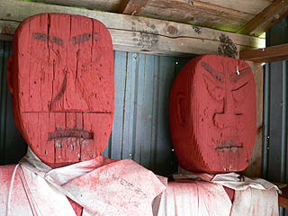

人形道祖神/大館市雪沢付近
人形道祖神巡りの旅、お次は大館市街から東、小坂町へ至る街道沿いにある幾つかの集落の人形道祖神を訪ねる。
この地域の人形道祖神の特徴は・・・まっ、見てもらえばわかります。
まずは小雪沢地区。
街道とから枝別れした旧道にある小雪沢の下と上にドンジン様とよばれる人形道祖神がある。
見よ！この勇姿を！真っ赤っか！
木を彫刻した全身像に紅殻を塗り付けたその姿はかなり強烈だ。秋田に潜む民間信仰の神髄を見せつけてくれる。
紅殻が流れているからだろう、比較的新しいブロック造の祠の床は真っ赤に染まっている。
乳が描かれているところをみると女神なのだろう。そういえば目が心なしか乙女チックな気がする。
ということは集落の逆サイドにいるのは・・・
やっぱり男神でした。こちらは髭と胸毛をたくわえダンディーっぽさをアピール。
男女とも帯刀している。
続けて隣の大明神地区。この地区の外れにもドンジン様がいる。
山あいの小さな里の小さな神社。後ろの山と神社の間には長木川が流れていて、その流れは清らかで、まるで桃源郷のようなところだった。
 そんな桃源郷の護り神はこんなお方。
大明神のドンジン様である。
基本的には先程の小雪沢のドンジン様と同じで、全身木製で赤塗り、男女対になっている。
このドンジン様もかつては路傍にて職務を遂行されていたのだろうが、現在は社殿に納まり名誉守護神と化している。
屋内に祀られているためか、保存状態が良く、両手が付いている。
小雪沢のドンジン様も腕の付け根にほぞ穴が開いていたので、かつてはこのように腕が付いていたと想像される。
そんな桃源郷の護り神はこんなお方。
大明神のドンジン様である。
基本的には先程の小雪沢のドンジン様と同じで、全身木製で赤塗り、男女対になっている。
このドンジン様もかつては路傍にて職務を遂行されていたのだろうが、現在は社殿に納まり名誉守護神と化している。
屋内に祀られているためか、保存状態が良く、両手が付いている。
小雪沢のドンジン様も腕の付け根にほぞ穴が開いていたので、かつてはこのように腕が付いていたと想像される。
 気になるのは首から股にかけて黒ずんでいる部分。
もしかしたら祭のときに酒でも飲ませた跡なのだろうか。
遠目に見るとゲロはいてるみたいで、別の迫力があったぞ。
つーか、塗り替えしてないんでしょうか？
気になるのは首から股にかけて黒ずんでいる部分。
もしかしたら祭のときに酒でも飲ませた跡なのだろうか。
遠目に見るとゲロはいてるみたいで、別の迫力があったぞ。
つーか、塗り替えしてないんでしょうか？
長木川に平行した街道は小坂製錬小坂鉄道の踏切を越えると新沢地区に入る。
ちなみに現在小坂鉄道は貨物専用となり一般の客車は走っていないそうだ。近くに茂内という立派な駅があったが、そこもひっそりとしていた。
その踏切のたもとには新沢の下のドンジン様が睨みをきかせている。
祠の中を覗くと・・・
あまりの異形っぷりに思わずのけぞってしまいました。
基本的なアイテムは先程見たモノと同じなのだが、この二体が発するオーラはタダモノではない。
腰ミノといいエキゾチックなお顔だちといい、どこか南方の神様を連想させる姿である。いかりや長さんのコントみたいですもん。
旗には「奉祭鹿嶋大明神」とあった。
こちらは新沢地区の上のドンジン様。
こちらも腰ミノ付きだが先程の下のドンジン様に比べるとそんなに南方テイストは感じられない。
なんなんでしょう、この違い。
それでも異形である事は間違いない。この雪沢付近のドンジン様と呼ばれる人形道祖神全体がかなり異形なのだ。
お次は小坂への街道からやや外れた二ツ屋地区。雪沢周辺では一番奥まった集落だ。
村の入口にぽつんと立つ小さな小屋、しかしもちろん物置き小屋でもなく野菜の無人販売でもない。
その証拠に注連縄が張られているのだ。
ここのはドンジン様ではなくドジン様。ドジンのドは土じゃなくて道ジンは人じゃなくて神だという。
つまり道祖神→ドウジン→ドンジン→ドジンという事か。
男女並んで刀を腰に差して立つ姿はさすらいの夫婦剣士！って感じですか。
首に巻いてある前垂れも風になびくマフラーみたいで「さすらいっぽさ」を微妙に演出している。
しかも白装束に返り血を浴びてるみたいでチョット不気味です。
かつては目に銀紙が貼られていたという。

左が現在の姿。右は最新のCG技術を駆使してかつての様子を再現してみました。
やっぱ銀の目が入っている方が全然かっこいいですね。ウルトラマンみたいで。
そういえば男鹿半島のナマハゲにも目が銀紙で出来ていて、スペクトルマンやマグマ大使みたいなナマハゲもいたりする。
銀紙を目に貼付けてスーパーヒーロー化させるのは秋田の民俗系人形の現代的な特徴なのだろうか？
ドジン様の足元にはベンガラで塗られた腕が落ちていた。これもかつては大明神のドンジン様のように両手を広げていたのだろうか。
角度的にはバンザーイポーズかと思われるが、そうなるとこの小屋に納まり切れないので、現在の小屋が立つ前から手はとれていた、と考えられる。
白沢付近で見た人形道祖神は木製頭部＋ワラの身体というものが多かったが、ここ小雪沢付近の道祖神はみな全身木製。しかも真っ赤っか。
同じ市内で数キロしか離れていないのに白沢付近の人形道祖神が強く東北の農村を感じさせてくれるのに対して、ここのドンジン様は一体何？
摩訶不思議としかいいようがない。
このようなデザインセンスが日本の伝統行事から生まれてくる事に驚きを禁じ得ない。
次の人形道祖神にGO!
人形道祖神に戻る
珍寺大道場 HOME